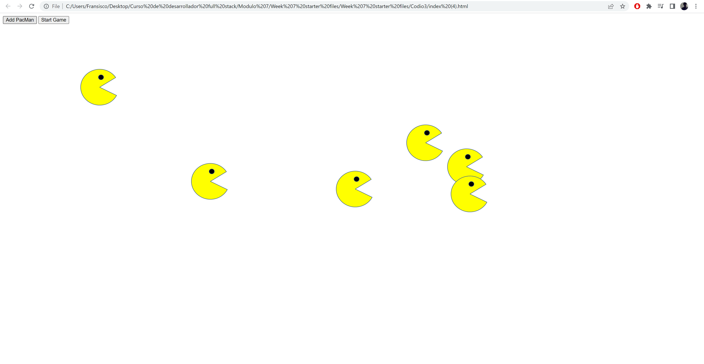
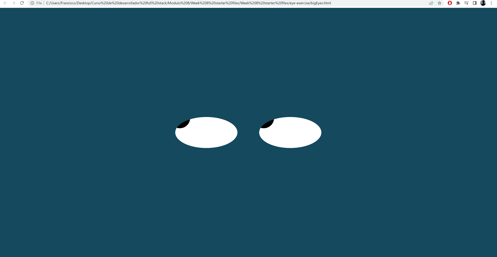
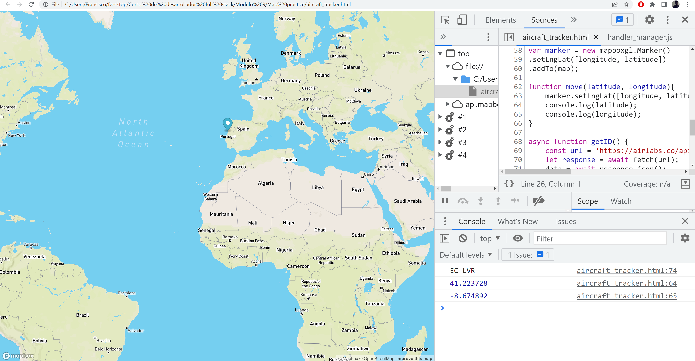

    <div class="general_container_projects">
        <div id="carouselExampleDark" class="carousel carousel-dark slide">
        <div class="carousel-indicators">
          <button type="button" data-bs-target="#carouselExampleDark" data-bs-slide-to="0" class="active" aria-current="true" aria-label="Slide 1"></button>
          <button type="button" data-bs-target="#carouselExampleDark" data-bs-slide-to="1" aria-label="Slide 2"></button>
          <button type="button" data-bs-target="#carouselExampleDark" data-bs-slide-to="2" aria-label="Slide 3"></button>
        </div>
        <div class="carousel-inner">
          <div class="carousel-item active" data-bs-interval="10000">
            
            <div class="carousel-caption d-none d-md-block">
              <h5>PacMen Excercise</h5>
              <p>Fill your screen with several pacmen and make them go nuts!</p>
              <a href="https://github.com/kimpaco/pacmen_excercise.git">Go to GitHub</a>
            </div>
          </div>
          <div class="carousel-item" data-bs-interval="2000">
            
            <div class="carousel-caption d-none d-md-block" style="color: white">
              <h5>Moving Eyes Excercise</h5>
              <p>An interactive application where your every move is being followed.</p>
              <a href="https://github.com/kimpaco/Eyes_Excercise.git">Go to GitHub</a>
            </div>
          </div>
          <div class="carousel-item">
            
            <div class="carousel-caption d-none d-md-block">
              <h5>Aircraft Tracker Excercise</h5>
              <p>Follow an aircraft in real time with this tracker.</p>
              <a href="https://github.com/kimpaco/Aircraft_Tracker.git">Go to GitHub</a>
            </div>
          </div>
        </div>
        <button class="carousel-control-prev" type="button" data-bs-target="#carouselExampleDark" data-bs-slide="prev">
          <span class="carousel-control-prev-icon" aria-hidden="true"></span>
          <span class="visually-hidden">Previous</span>
        </button>
        <button class="carousel-control-next" type="button" data-bs-target="#carouselExampleDark" data-bs-slide="next">
          <span class="carousel-control-next-icon" aria-hidden="true"></span>
          <span class="visually-hidden">Next</span>
        </button>
      </div>
    </div>
      